Predaj 3 izbový prerobený byt, 1 balkón, Krušovská ul., Topoľčany
Topoľčany
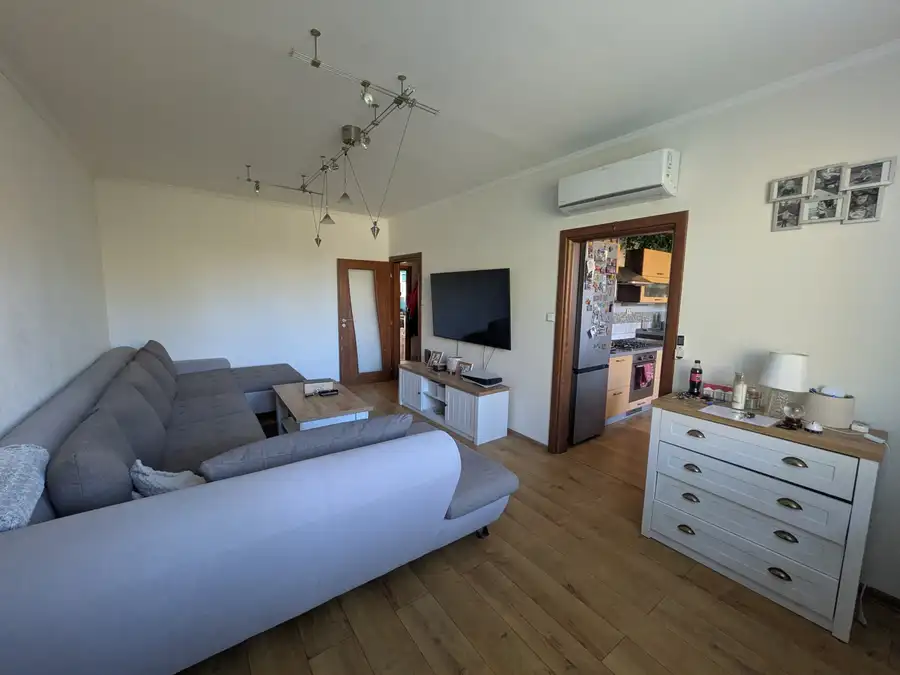
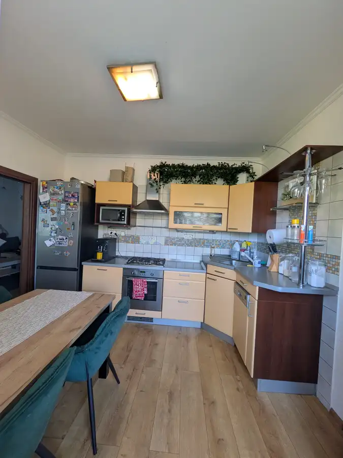
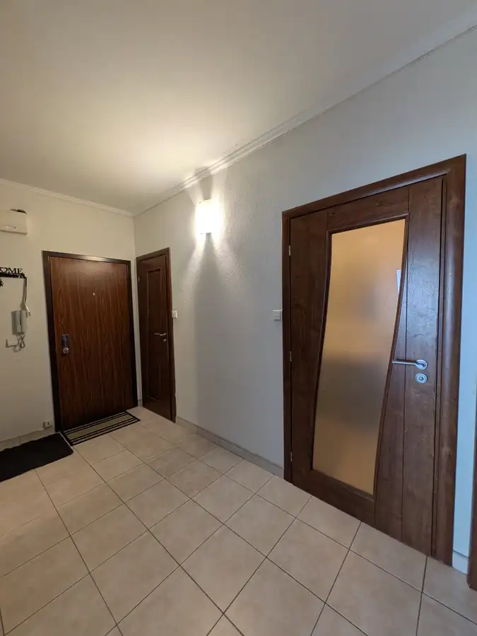
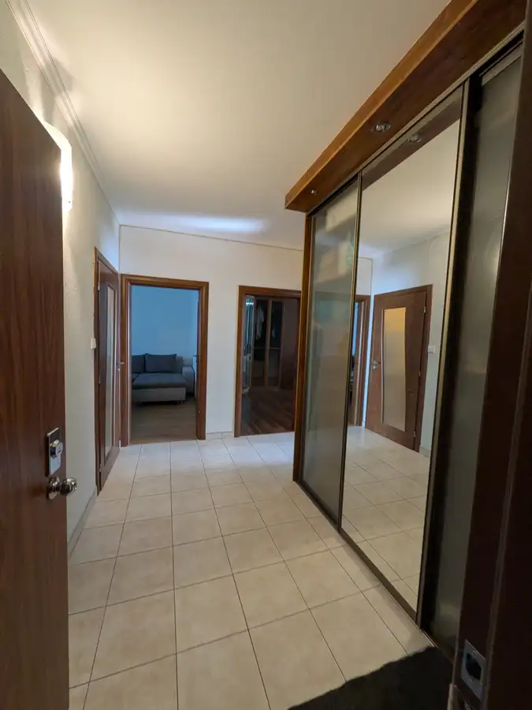
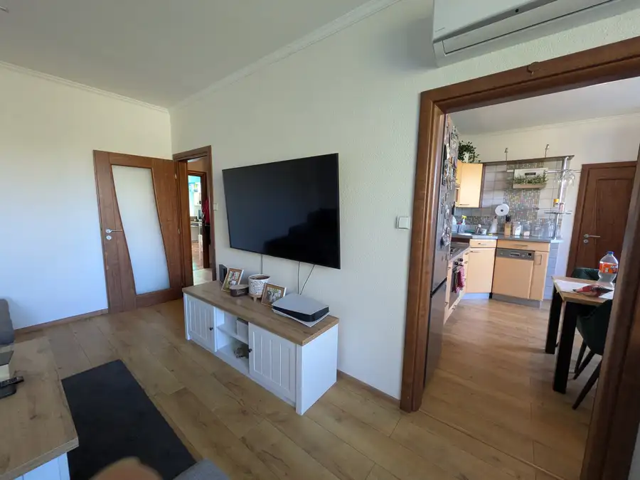
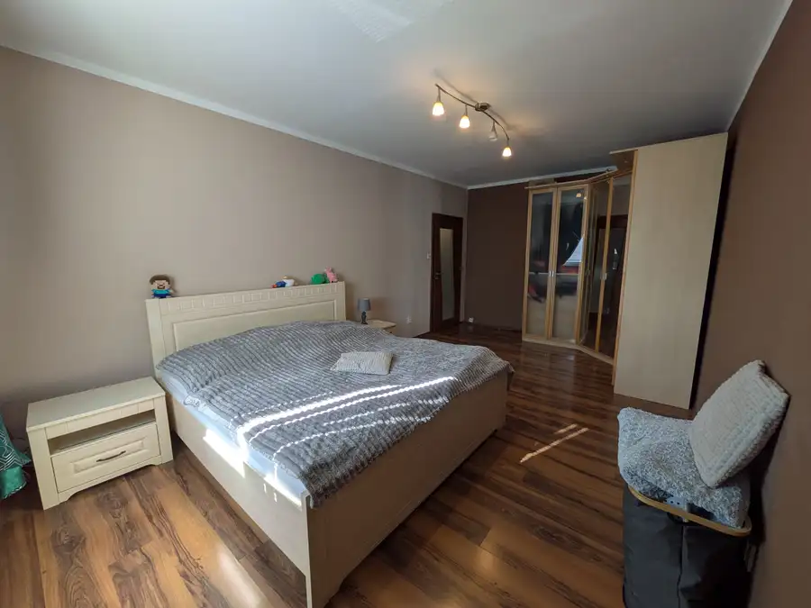
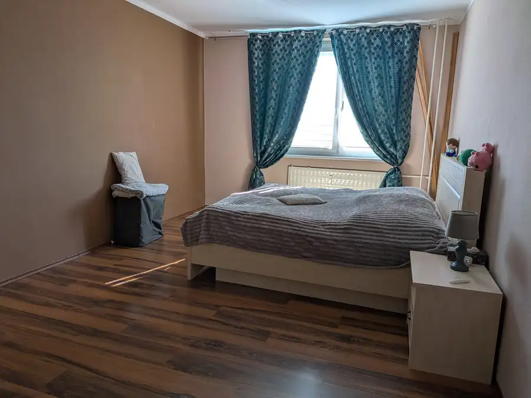
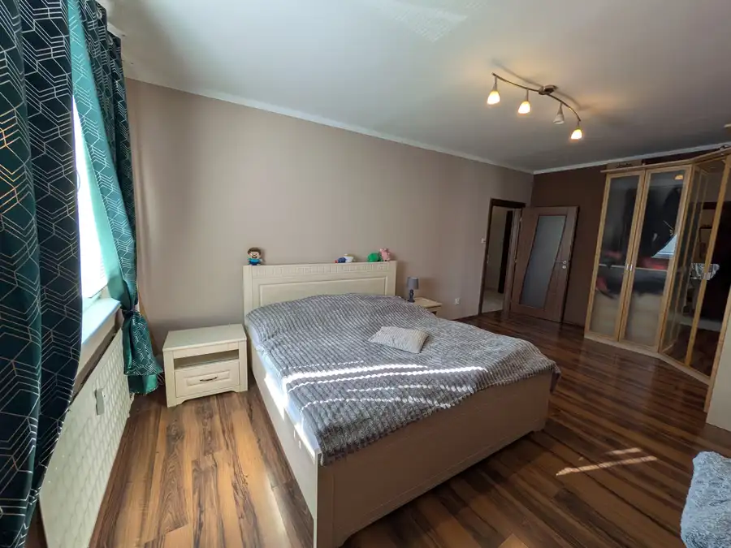
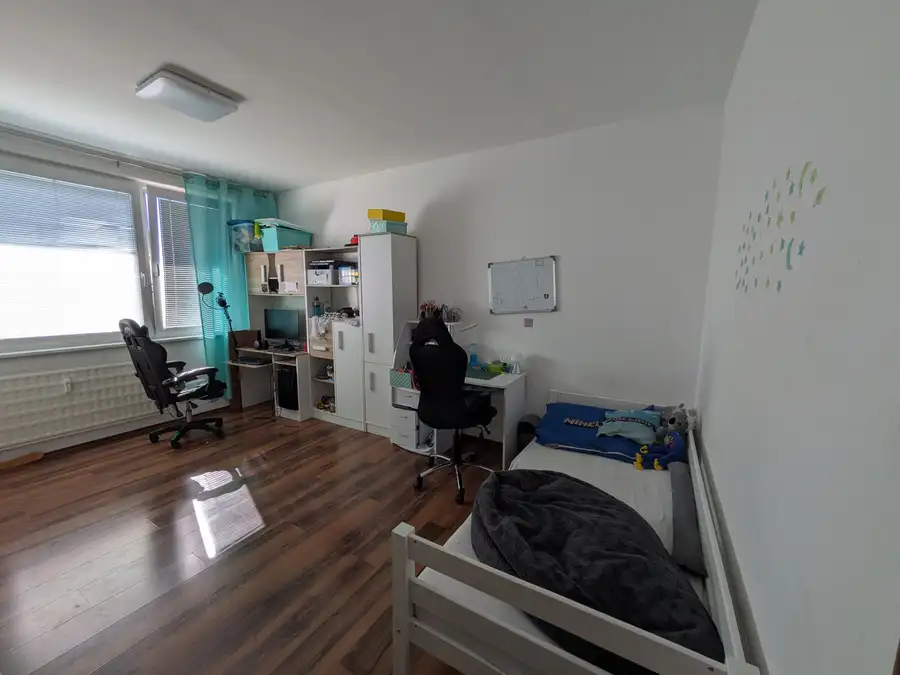
- Dispozícia3-izbový
- Plocha82 m²
- Poschodie4. z 4
- StavKompletná rekonštrukcia
- VlastníctvoOsobné
- Energetická triedaA
O nehnuteľnosti
Skyline reality ponúka exkluzívne na predaj útulný 3 izbový slnečný byt vo vyhľadávanej lokalite ul. Krušovská, Topoľčany, podlahová plocha 82 m2.Pokiaľ hľadáte zrekonštruovaný byt v ktorom si chcete vytvoriť svoj domov naša ponuka vás určite zaujme. Dispozícia - priestranná vstupná chodba, vstup do kúpelne s rohovou vaňou, samostatné WC, ďalej vstup do dvoch nepriechodných izieb a do obývačky z ktorej je vstup do kuchyne s balkónom.Celý priestor bytu je nádherne zladený, stierky, dlažba a plávajúce podlahy, keramické obklady, nové bezpečnostné dvere, nové stupačky, murované jadro, klimatizácia. Na chodbe a v spálni sú vstavané skrine. Byt sa nachádza na 4/7 poschodí, susedia sú príjemní, v blízkosti je veľmi dobrá občianska vybavenosť.Byt sa predáva čiastočne zariadený, je v osobnom vlastníctve a predajom ihneď voľný -pripravený na nasťahovanie.Ak máte záujem o viacej informácií, prípadne o obhliadku danej nehnuteľnosti neváhajte ma kontaktovať na telef. čísle 0903 832 335 alebo na lubomira.sadovska@skylinereality.skPatríme k členom Realitnej únie SR a aj vďaka tomu s nami získate garanciu profesionálnych právnych služieb, komplexného poradenstva a bezproblémového priebehu realizovanej kúpy/predaja.
Parametre
- Cena vrátane energií
- Nie
- Druh
- 3 izbový byt
- Dátum zverejnenia
- 29. 09. 2026
- Energetická náročnosť
- Nízkoenergetický
- Energetický certifikát budovy
- A
- Energie
- 170
- Plocha balkónu v m2
- 4 m²
- Podlažie
- 4
- Počet balkónov
- 1
- Počet izieb / miestností
- 3
- Počet nadzemných podlaží
- 4
- Prechodová izba
- Áno
- Rok poslednej rekonštrukcie
- 2018
- Rok výstavby
- 1980
- Stav nehnuteľnosti
- Kompletná rekonštrukcia
- Telekomunikácie
- Internet, Káblová TV
- Typ
- Predaj
- Typ konštrukcie
- Panelová
- Umiestnenie
- Ďalšie nadzemné podlažie
- Vlastníctvo
- Osobné
- Vybavenie
- Balkón, Špajza, Výťah
- Vykurovanie
- Ústredné
- Zariadenie
- Čiastočne zariadené
- Úžitková plocha
- 82 m²
Kde to je


Mohlo by Vás zaujímať
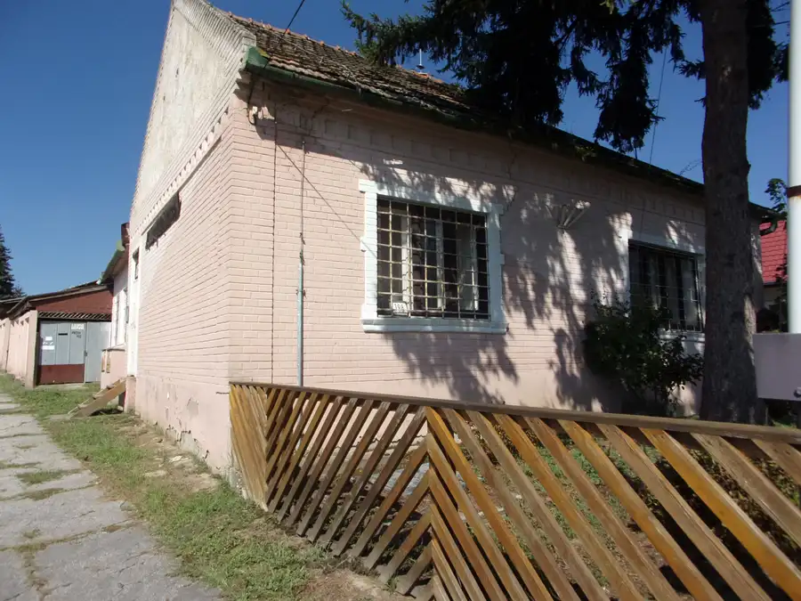
DomNové 79 000 €Investičná ponuka - prevádzková budova 400 m2, Plavé Vozokany, Levice Plavé Vozokany 200 m²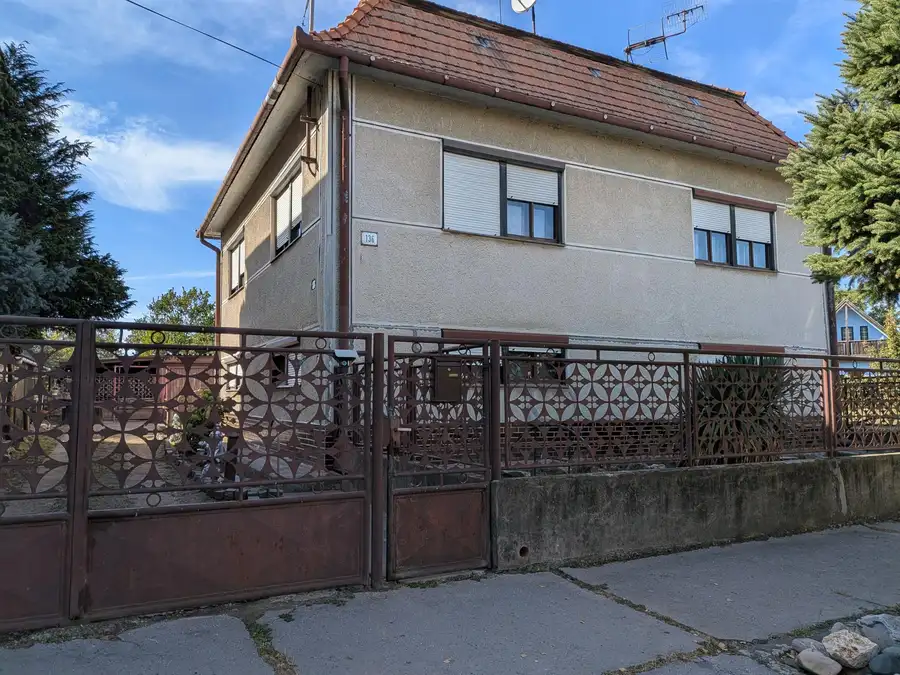
DomNové 123 000 €Exkluzívne na predaj 4 izbový rodinný dom, Plavé Vozokany, okres Levice. Plavé Vozokany 150 m²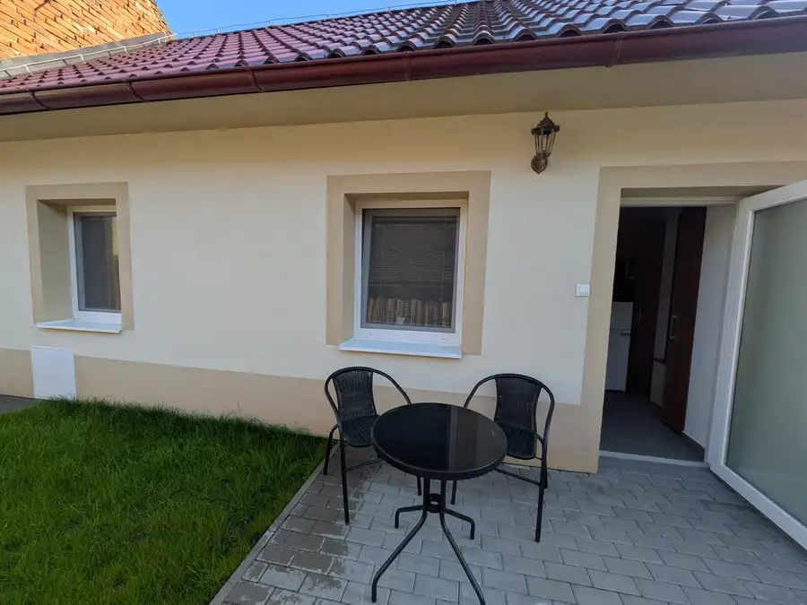
BytNové Cena na vyžádáníPrenájom 2izbový byt Topoľčianky, Zlaté Moravce Topoľčianky 2-izbový28 m²